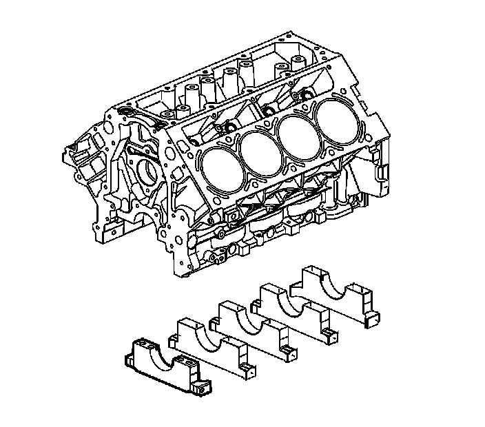
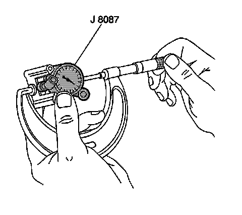
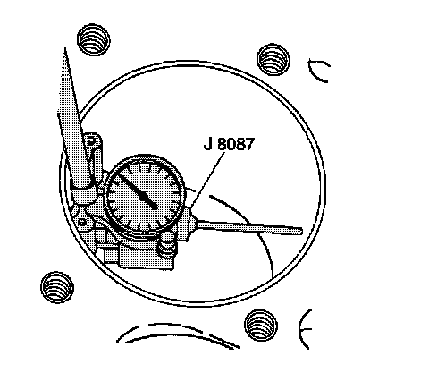

32. Engine Block Cleaning and Inspection
Engine Block Cleaning and Inspection
Tools Required
^ J 8087 Cylinder Bore Gage
^ J 42385-100 Head/Main Bolt Thread Repair Kit
Cleaning Procedure

Notice: Do not use a caustic solution to clean the aluminum engine block.
Important: When cleaning the engine block in a thermal type oven, do not exceed 232°C (450°F).
Clean the following components:
^ Remove all sludge, dirt, or debris using a cleaning solvent or thermal type oven. Refer to Cleanliness and Care.
^ Gasket surfaces
Refer to Replacing Engine Gaskets.
^ Coolant passages
^ Oil galleries
^ Main bearing caps
^ Cylinder head bolt holes to remove threadlocking material
Thread repair tool J 42385-107 may be used to clean the threads of any residual threadlocking material.
Inspection Procedure
1. Inspect the following components:
^ Cylinder walls for excessive scratches, gouging, or ring ridge
^ Cylinder bores for excessive ring ridge at the top of the cylinder
^ Coolant jacket for cracks
^ Valve lifter bores for excessive scoring or wear
^ Crankshaft bearing webs for cracks
^ Gasket sealing surfaces for excessive scratches or gouging
Refer to Replacing Engine Gaskets.
^ Oil galleries for restrictions
^ Threaded bolt holes for damaged threads
^ Cylinder bores for excessive ring ridge at the top of the cylinder
2. Measure the cylinder bores for an oversize condition:
Measuring the Cylinder for Oversize

1. Adjust the micrometer to a dimension slightly smaller than the bore size. Refer to Engine Mechanical Specifications.
2. Insert the J 8087 into the micrometer and zero the bore gage dial.

3. Use the J 8087 and measure the cylinder bore for oversize.
Slide the bore gage up and down throughout the length of the cylinder bore. Measure the bore, both parallel and perpendicular to the centerline of the crankshaft, at the top, center, and bottom of the bore. A cylinder bore that exceeds the maximum diameter must be serviced with an oversized piston. Refer to Engine Mechanical Specifications.